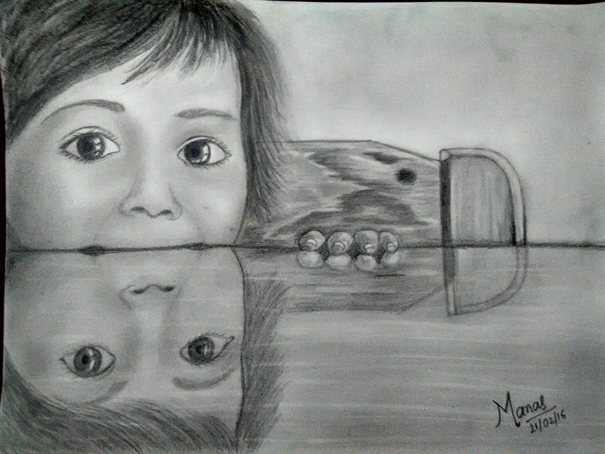
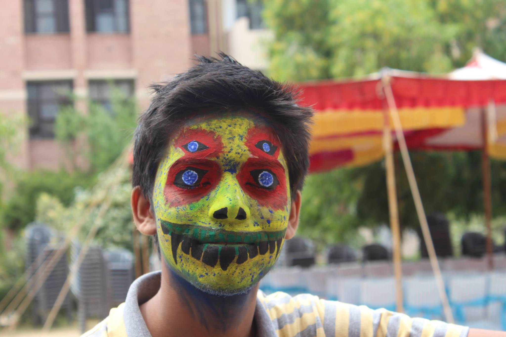

About
Education
Experience
Skills
Publications
Projects
Positions of Responsibility
Courses
Achievements
Resume
*Desktop compatible view only*
Manas Bundele
 manasbundele
manasbundele
 manasbundele
manasbundele
About
I am currently a Master's student at University of Texas at Dallas,
studying Computer Science with specialization in Intelligent Systems. My broad interests include Computer Vision, Natural Language Processing and Machine Learning. I am currently working on my thesis titled 'Caption Generation for Images'. I am always excited to talk about interesting problems in the field of Computer Science.
I completed my B.Tech. in Computer Science and Engineering
at Indian Institute of Technology,
Jodhpur in 2016. After my B.Tech. at IIT Jodhpur, I worked as Software Engineer at Voylla Fashions Pvt. Ltd.
Education
University of Texas at Dallas
| MS in Computer Science
Expected May 2020
Jonsson School $1000 Graduate Study Scholarship Recipient

Indian Institute of Technology, Jodhpur
| B.Tech. in Computer Science & Engineering
May 2016
B.Tech. Project nominated for 'Best B.Tech. Project' award in the institute
Experience
UT Dallas Computer Science Department
- Outreach Coding Camp Counselor
- Worked as a camp counselor for high school kids of different ages participating in the coding camps at UTD
- Computer Science Grader
- Graded the tests, quizzes and assignments of a batch of 75 undergraduate students for the course Discrete Mathematics
- Got nominated for the ’Best Grader’ Award in the department
- Project LP Boost: Designed and implemented an algorithm that increased revenue of the company many fold and was probably the first such advanced implementation in the company.
-
Project Solidus: Voylla Website Upgradation (Team of Eight developers) and Data Migration.
- Key member of the team of four, involved in developing website’s order pipeline.
- Handled data migration, a very critical aspect of the project which could only be totally tested in production environment
- Improved the efficiency of Order Pipeline and other features through code and database query optimization - Project CRM Centre Database: Wrote optimized Postgresql scripts to synchronize the customer’s data from website and ERP databases into a centralized database daily, data being used for analysis and in key projects by the Data Science team
- Participated in the research project titled “ Underwater Glider” under the guidance of Cdr (Dr.) Arnab Das at Defence Institute of Advanced Technology, Pune and Indian Institute of Technology, Delhi (IITD).
Jun 2019 - July 2019
Aug 2018 - May 2019
Voylla Fashions Pvt. Ltd., Jaipur
| Software Engineer
May 2016 - Jun 2017
Defence Institute of Advanced Technology, Pune
| Research Intern
May 2014 - Jun 2014
Skills
Below are some of the skills that I have used in my projects before. I am always willing to add more to my skillset.

Although I had used python a couple of times before joining UTD, I have been using it over the past 1 and 1/2 years for my coursework and research. Most of my projects related CV, NLP and ML have been coded in Python.

I have been using this library over the past few months in my projects as well as my research work. To improve my skills, I very recently completed a course 'Tensorflow in Practice' by deeplearning.ai.

During my job at Voylla Fashions Pvt. Ltd., being one of the go-to backend developers, I have heavily used it for development, debugging and optimization of several projects.
I recently used this language during my course, Big Data Analytics and Management. It is a wonderful language to work with and hope to use it again in my other projects.

During my course Big Data and Analytics, it was interesting to learn about Big Data ecosystems i.e. Hadoop, Mapreduce, Apache Spark and NoSQL systems.

I have extensively used C/C++ in projects and competitive coding during my B.Tech., prior to 2016. Recently, got in touch with it again(alongwith opengl) in my course Computer Animation and Gaming.

I have written several 1000 queries in Postgresql over the course of my projects at Voylla. From using it for analysis, data cleaning and data migration in Solidus to creating a CRM centre database, it has been an interesting journey working with data using Postgresql.

Right from building this website to working on frontend related projects at Voylla, it has been fun using HTML, CSS, JS and Jquery.
Publications
- Pratik Kalshetti, Manas Bundele, Parag Rahangdale, Dinesh Jangra, Chiranjoy Chattopadhyay, Gaurav Harit and Abhay Elhence; "An Interactive Medical Image Segmentation Framework Using Iterative Refinement", Computers in Biology and Medicine, February 2017, pp. 22-33.
More details at: http://home.iitj.ac.in/~chiranjoy/research/medimage.html
Link to paper: https://www.sciencedirect.com/science/article/pii/S0010482517300392
Projects
This list of projects cover most of my projects but is not limited to the same.
@University of Texas at Dallas
Caption Generation*
[Master's Thesis]
To develop a novel technique to generate the description of an image by understanding its contents. The aim is to improve the language model, as most generated captions lack richness in its content.
Fake Opinion Detection
[Big Data]
Developed a supervised learning model using Pyspark and MLlib that was able to detect fake reviews by learning from YelpNYC dataset.
Sentiment analysis of live
streaming twitter feeds
Created a Spark Streaming application that continuously reads data from Twitter about a topic and these feeds can be analyzed for their sentiment and the trend can be visualized using ElasticSearch, Logstash and Kibana(ELK) stack.
elasticsearch logstash kibana stanford corenlp sentiment analyzer
Other Big Data-related projects
Implemented various algorithms and performed analysis on big data related to airports, movies, twitter social circles, etc.
- Pagerank for airports
- Search Engine for movies
- Topic modeling for classic books
- Twitter airline sentiment analysis
- Twitter social circles analysis using GraphX
Modified MNIST Digit Recognition
using ResNet
Implemented a residual network using Tensorflow in Python and included batch normalization, non-linearities, dropout, l2 regularization to improve accuracy and reduce overfitting. Achieved over 90% accuracy in 4 & 1/2 min on testing data of 10k images with modified different random training datasets of 6k images of size 7*7
Wink Detection using Haar Cascades
[Computer Vision]
Implemented a winking face detection algorithm in images as well as live video using Haar feature-based cascade classifiers.
Text Generation using N-Gram Language Model
Implemented a MLE based N-Gram language model with various smoothing techinques to generate text based on a written text.
Sentiment Analysis of
Movie Reviews
Implemented a sentiment analyzer using Naive Bayes and Logistic Regression classifier to predict the sentiment of a review. It also uses a sentiment lexicon, Dictionary of Affect in Language, which is further augmented using WordNet to improve sentiment analysis results.
POS tagging using MEMM
with Viterbi decoding
Implemented a POS tagger using Maximum Entropy Markov Model with Viterbi to decode the highest probability sequence of tags for each test sentence.
@IIT Jodhpur
Interactive Medical Image Segmentation
[B.Tech. Project]
Developed a semi-automated segmentation technique for efficient image analysis for 3D visualisation as well as image guided surgery at reduced costs and minimized expert intervention. Got nominated for the Best B.Tech. Project Award, one of the 3 projects nominated in the entire batch of 2016.
Centralized Video Processing
Developed a remote video processing system using socket programming in C++. Multiple users were managed using threading. Reduced the network load and video tagging was done at the server for minimizing data storage.
Virtual Memory Management
Designed a virtual memory system in C and analysed the performance of FIFO, clock and LRU algorithms for page replacement. Parameters considered – prepaging vs demand paging, local vs global page replacement, precleaning.
Gest-Talk
An application, developed within 24 hours, in C# during Code.fun.do(2015) conducted by Microsoft, using the machine learning feature of Visual Gesture Builder for Microsoft Kinect 2.0,which targets the communication between differently-abled people with the help of gestures.
Positions of Responsibility
Below are some of the major PORs that I managed during my B.Tech.
Assistant Student Head, Counseling Service, IIT Jodhpur
Mar 2014 – Apr 2015
Led and managed a team of 17 student guides along with 7 other assistant student heads and successfully set up a Counseling Referral System and conducted Career Counseling Sessions for the 1st time in the institute.
Head, Publicity and Media, Varchas'14, IIT Jodhpur
Sep 2013 – Feb 2014
Led a two-tier team of 12 people to plan and publicize the inter-collegiate sports festival of the institute, bringing countrywide participation of over 1000 people. Publicized and brought a participation of over 500 people in the Varchas Mini-Marathon’14, organized across Jodhpur by IIT Jodhpur
Coordinator, Marketing, Ignus’14, IIT Jodhpur
Sep 2013 – Feb 2014
Worked with a team of 26 members to garner Rs.30 lakhs as sponsorship for the inter-collegiate techno-cultural festival of IIT Jodhpur, bringing a footfall of over 4000 people.
Student Guide, Counseling Service, IIT Jodhpur
Mar 2013 – Apr 2016
Mentored a group of 10 counselee students and guided them regarding academic and extra- curricular affairs in the institute, acting as a Student Guide throughout their stay.
Courses
@University of Texas at Dallas
- Machine Learning
- Computer Vision
- Convolutional Neural Networks
- Natural Language Processing*
- Design & Analysis of Computer Algorithms
- Big Data Management And Analytics
- Distributed Computing
- Database Design
- Computer Animation and Gaming*
@IIT Jodhpur
- Artificial Intelligence
- Digital Image Analysis
- Computer Graphics
- Operating Systems
- Compiler Design
- Computer Networks
- Principles of Databases Systems
- Software Engineering
Achievements
Few of the many things to be proud of.
- Journal Publication honored with "Meritorious" status in Honored papers 2017, Computers in Biology and Medicine (2018), doi: 10.1016/j.compbiomed.2018.05.020
- Recipient of Jonsson School $1000 Graduate Study Scholarship at University of Texas at Dallas (2018)
- B.Tech. Project, one of the three projects nominated from the institute for 'Best B.Tech. Project' award (2016)
- All India Rank 3471 in IIT-JEE 2012, among 500,000 candidates from all over the country
- Secured State Rank 30 (2009) and District Rank 1 (2008) in Maharashtra Talent Search Examination
- Stood among the top 0.01% students in the Maharashta State Scholarship examination in 2007
A bit more about me...
Although the grad life keeps me busy nowadays, I try to invest time in my new-found love for cooking new delicacies and fitness. I also enjoy playing basketball. I love drawing and painting and have even surprised myself by making a few good ones. I also love getting my face painted though. :D

